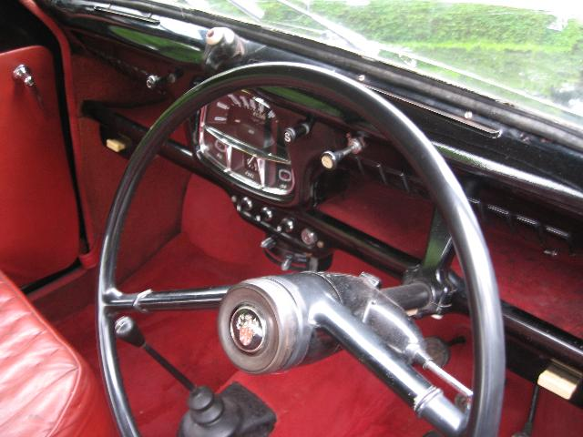
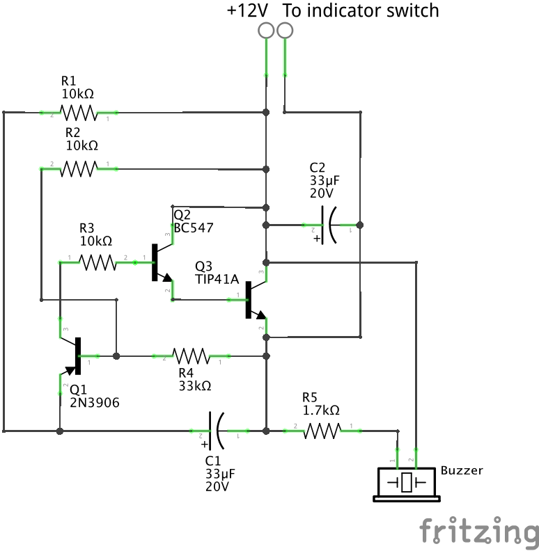
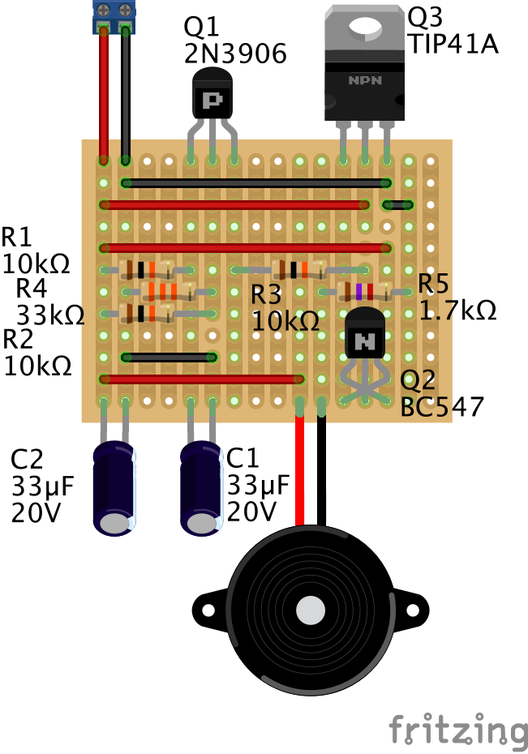

Are You a Flasher?
Modern cars, and by that I mean anything built from the mid sixties onwards, come with a plethora of features designed to make our driving easier. One such feature is the self-cancelling indicator. I well remember my Father’s Austin A35, a small but ‘modern’ car of the early sixties, having a Lucas SPB120 indicator switch mounted on the top of the dashboard, with a tell-tale light in the middle to show that it was set. My Dad would often forget to turn it off, so I would do it for him.
By the time that I learnt to drive we had a Vauxhall Viva HA, with a single stalk that you could operate with your little finger to indicate, dip the headlights and sound the horn. And, of course, the indicators were self-cancelling. I wonder how long it will be before we operate the indicators in our cars by voice command.
By contrast, my TC was built in 1948 without indicators of any kind. However, the previous owner, when installing a new wiring loom, also fitted flashing indicators. The loom allowed dual filament bulbs to be used in the front side lights and separate amber lights were attached to the luggage rack at the rear. He also installed a Lucas SPB120 switch beneath the dash and used a simple two-pin, electro-mechanical flasher unit.
 An outline of the wiring can be seen in the diagram. As shown, the Lucas switch has five connection posts (the bottom two internally connected) and a roller that connects power to the left or right. The way that the switch is wired on TC4985 means that the switch bulb (which is only 2.2W compared with 21W for each of the indicator bulbs) is earthed through the indicator bulbs on the 'other' side! This works because, according to my calculations, the current through each indicator bulb (in the required direction) is 1.75A, whereas the current through the bulbs on the other side (earthing the switch bulb) is only 170mA. Consequently, the latter bulbs only glow faintly if at all.
An outline of the wiring can be seen in the diagram. As shown, the Lucas switch has five connection posts (the bottom two internally connected) and a roller that connects power to the left or right. The way that the switch is wired on TC4985 means that the switch bulb (which is only 2.2W compared with 21W for each of the indicator bulbs) is earthed through the indicator bulbs on the 'other' side! This works because, according to my calculations, the current through each indicator bulb (in the required direction) is 1.75A, whereas the current through the bulbs on the other side (earthing the switch bulb) is only 170mA. Consequently, the latter bulbs only glow faintly if at all.
The original flasher unit contains a bi-metal strip with a fine wire wound around it. When power is applied the fine wire heats up, bending the strip until the electric circuit is broken and the indicators go out. The strip cools until it again makes contact and the cycle is repeated, roughly once every second. However, the quality of these units is poor and I was on my third version in 18 months when I decided that an alternative was called for.
Now anyone involved with digital electronics will immediately think to build a solid-state flasher unit using a 555 timer. Not only does this integrated circuit operate with a voltage of up to 15V, but by adjusting the values of the attached components (resistors and capacitors) you can make the 555 timer turn its output on and off at the required frequency. That output can then drive a power transistor to switch the 3.5 amps needed by the indicators on and off. However, electronic devices of this type require a stable earth (a zero volts reference), not one that comes and goes. To make this approach work I would need to significantly modify the wiring in the car so as to provide a separate earth and to allow the switch to both turn the device on and off and to direct the output to the required side.
So I decided to adapt an analogue electronic circuit that uses the fact that a capacitor takes a finite time to charge up or discharge through a resistor. For those interested in how this circuit works I’ve tried to explain it in the following paragraph. If you’re not interested then skip over it.
The circuit shown uses the time taken for a capacitor (C1) to charge through a resistor (R1), and then to discharge through resistor R3 to provide the on and off periods. Those components are combined with the transistor Q1 to make the oscillator. Transistor Q1 then causes the Darlington pair (Q2 and Q3) to switch on the indicator lights. When the switch is set to indicate (either left or right), the output of the flasher unit is essentially grounded since the indicator bulbs have a resistance of only 7 Ohms compared to 43K Ohms of directly connected resistance. The voltage at the base of transistor Q1 is about 9V. So it's not until the voltage at the emitter of Q1 gets to about 9.7V that it switches on (since the PNP transistor needs the base to go low to switch the transistor on). The voltage at the emitter of Q1 takes about 1second to reach this voltage due to the 10K resistor. (To fully charge C1 takes 5RC = 5x0.33 = 1.65s.) But once Q1 is ‘on’ and the Darlington pair have been turned on, C1 starts discharging through R3 (and the three transistors) until Q1 is turned off, when Q2 and Q3 are also turned off. The cycle then repeats. The indicator bulbs are 21W, so each takes 21/12 = 1.75A, with a resistance of ~7 Ohms. So, when on, the two indicator bulbs on one side take 3.5 Amps. The tell-tale bulb is 2.2W and thus takes 0.183 Amps (although slightly less since it is in series with the two bulbs on the other side). So the power transistor current needs to be at least 3.5 Amps. A TIP41A (which I happened to have in my box) has a maximum collector current of 6 Amps.
The figure shows how I converted the circuit diagram into something that could be built on a piece of stripboard, which is a set of copper strips on an insulating board with holes through which component wires can be pushed and soldered. You can see from the photo showing the stripboard in the case that I used the spade connectors from an old mechanical flasher unit, with the base suitably cut down and held in place by a nut and bolt. You can also see the buzzer bolted to the lid of the box. I put a resistor in series with it so as to reduce the volume of the buzz to something more acceptable in the car. As you might be able to tell from the circuit diagram, the buzzer is on when the the indicator lights are off and vice versa.
The result is a plug-compatible unit, fixed under the dashboard with Velcro, that reminds me quite sharply that I’ve turned it on. The mechanical flasher unit is still in place and the wires could simply be moved across so as to use it if required. [If your’e wondering, the circuit diagram and the strip board layout were produced using a free piece of software called Fritzing. So yes, I’m a flasher! When the old units broke I did wonder how many other road users would understand my hand signals.


(Written 19th July 2017; published in WSMGOC Main Gear, August 2017.)
© David James 2020 Last updated: 20th April 2020